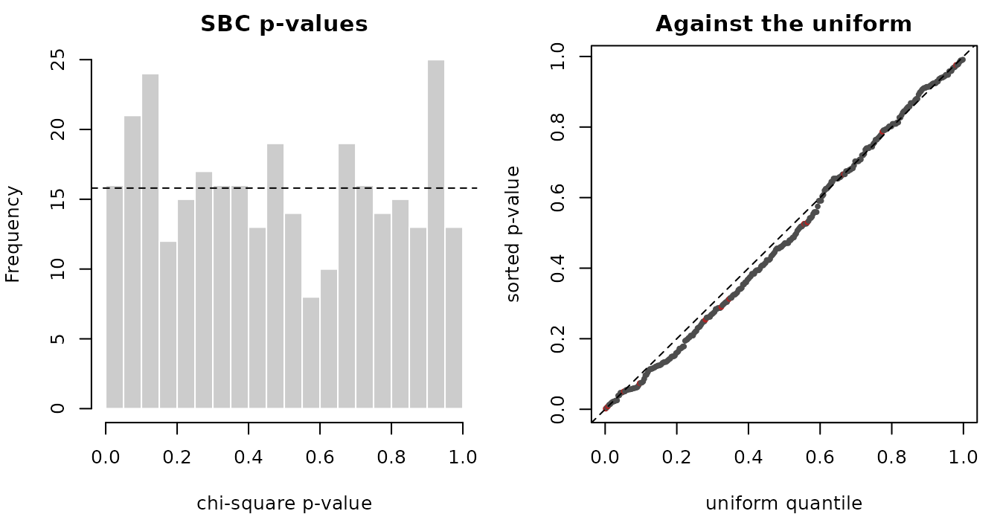
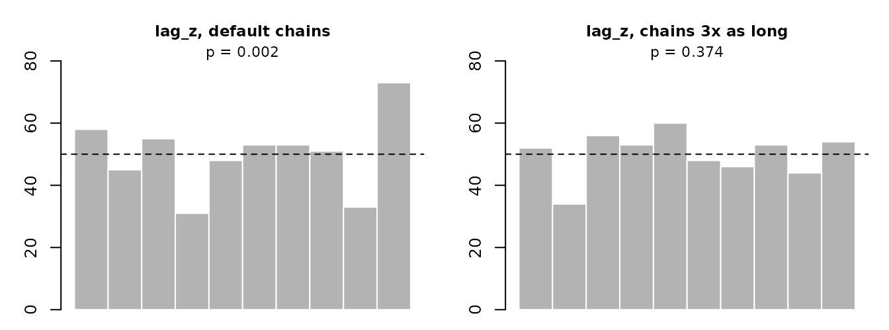
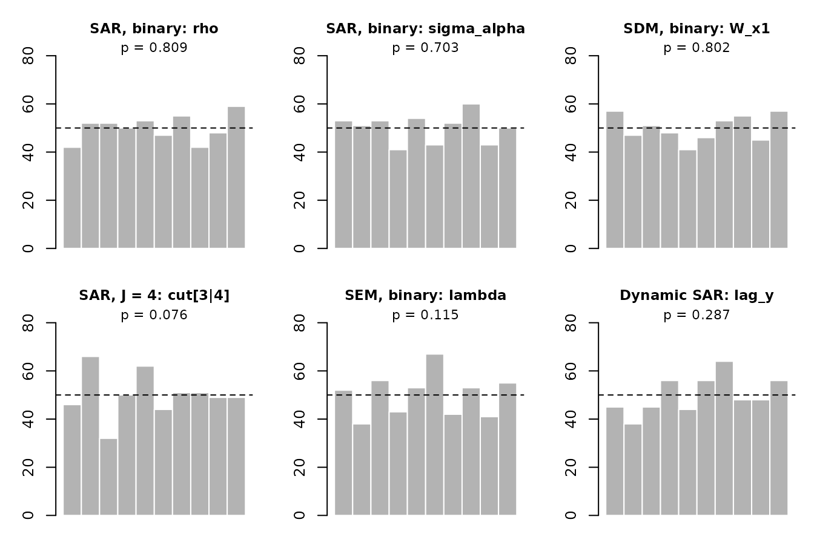
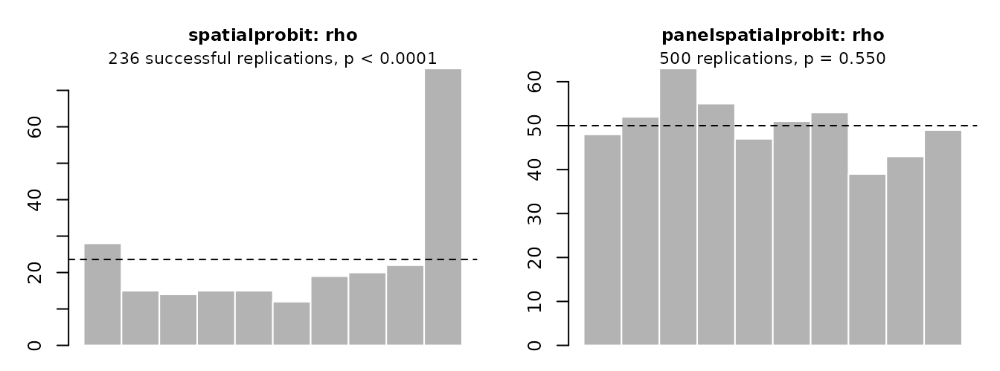

An MCMC sampler can run, produce plausible numbers and still be
wrong: a conditional distribution off by a term, a block order that
breaks a collapsed Gibbs step, a move that does not preserve the target.
Such errors bias the posterior without any error message. This vignette
summarises the evidence that the samplers in
panelspatialprobit target the right posterior and that the
resulting estimates behave as they should. The scripts and full results
are in the validation/ directory of the source repository;
the figures below are drawn from summaries of those results stored with
this vignette.
The evidence comes in four layers:
- an independent reference sampler in the test suite;
- simulation-based calibration of every model variant;
- a Monte Carlo study of bias and coverage;
- cross-checks against other packages.
A last section reports the speed and mixing of the sampler.
1. An independent reference sampler
The package contains a second sampler written in plain R that deliberately uses different algorithms: dense precision matrices instead of the sparse residual updates, random-walk Metropolis steps with exact log-determinants for , , and the latent AR coefficient instead of griddy Gibbs steps, and no scale or cut-point moves. It shares no sampling code with the Rust engine. The test suite runs both on the same small data sets (SAR, SEM, SARAR, spatial random effects, Student-t errors, time-varying weights, latent dynamics, binary and ordered) and requires every posterior mean to agree within four Monte Carlo standard errors. A mistake in one sampler would have to be repeated, through a different route, in the other.
The cut-point moves are tested separately: started from draws of a known joint distribution, one step of the kernel must leave that distribution unchanged.
2. Simulation-based calibration
Simulation-based calibration (SBC; Talts et al. 2018) checks a sampler against its own model. Draw parameters from the prior, simulate a data set from them, fit the model, and record the rank of the true value among the posterior draws. If the sampler targets the correct posterior, these ranks are uniformly distributed, whatever the data. A sampler that is too confident gives U-shaped rank histograms; one that is biased gives skewed ones.
The design: a 4 × 4 rook grid (), periods, proper priors (, , the same for and , , cut-points ), 500 replications per variant, two chains, 400 thinned posterior draws per fit. Uniformity of each parameter’s ranks is tested by a chi-square test on 10 bins.
In all, 50 runs of 30 variants were made, with 316 rank tests. Under correct calibration the p-values of these tests are themselves uniform: about 5% should fall below 0.05 and 1% below 0.01 by chance alone.

The p-values are close to uniform. Of the 316 tests, 16 fall below 0.05 and 3 below 0.01:
| variant | seed offset | parameter | p | median max R-hat |
|---|---|---|---|---|
| sar_lat_re_bin | 0 | (Intercept) | 0.00839 | 1.0180 |
| sar_lat_re_bin | 0 | lag_z | 0.00181 | 1.0180 |
| sarar_tv_re_ord3 | 0 | lambda | 0.00513 | 1.0103 |
Two come from the latent AR model with SAR at the default chain length (red in the right panel), and the third, in the SARAR model with time-varying weights, passes in a replication with other seeds (p = 0.464). In the latent AR model the ranks of the latent AR coefficient are U-shaped, and the failures concentrate in the replications whose chains had not converged (max ): the sampler mixes slowly, rather than targeting the wrong distribution. A replication with other seeds passes (p = 0.074), and so does the same variant with chains three times as long:

SARAR models with
show borderline results for
and
at the default chain length, again from slow mixing (the two parameters
are nearly interchangeable); this is why ?psprobit asks for
longer chains for them.
The rank histograms of a few central parameters:

The summary by variant (the smallest p-value over its parameters, and the median over replications of the largest ):
| variant | seed offset | parameters | min p | median max R-hat |
|---|---|---|---|---|
| none_re_bin | 0 | 4 | 0.164 | 1.006 |
| sar_chamberlain_bin | 0 | 9 | 0.056 | 1.010 |
| sar_chamberlain_bin | 1 | 9 | 0.047 | 1.010 |
| sar_dyn_bin | 0 | 9 | 0.056 | 1.010 |
| sar_dyn_bin | 1 | 9 | 0.023 | 1.010 |
| sar_lat_re_bin | 0 | 6 | 0.002 | 1.018 |
| sar_lat_re_bin | 1 | 6 | 0.074 | 1.017 |
| sar_lat_re_bin_long | 0 | 6 | 0.144 | 1.012 |
| sar_mundlak_bin | 0 | 6 | 0.058 | 1.008 |
| sar_pool_bin | 0 | 4 | 0.124 | 1.007 |
| sar_re_bin | 0 | 5 | 0.025 | 1.007 |
| sar_re_bin | 1 | 5 | 0.423 | 1.007 |
| sar_re_bin_missing | 0 | 5 | 0.087 | 1.008 |
| sar_re_bin_missing | 1 | 5 | 0.127 | 1.008 |
| sar_re_ord3 | 0 | 6 | 0.048 | 1.008 |
| sar_re_ord3 | 1 | 6 | 0.013 | 1.008 |
| sar_re_ord3_missing | 0 | 6 | 0.104 | 1.009 |
| sar_re_ord4 | 0 | 7 | 0.015 | 1.008 |
| sar_re_ord4 | 1 | 7 | 0.022 | 1.009 |
| sar_re_ord4_ac | 0 | 7 | 0.098 | 1.010 |
| sar_sre_bin | 0 | 6 | 0.059 | 1.009 |
| sar_sre_bin | 1 | 6 | 0.149 | 1.008 |
| sar_t_re_bin | 0 | 5 | 0.039 | 1.008 |
| sar_t_re_bin | 1 | 5 | 0.018 | 1.007 |
| sar_tv_re_bin | 0 | 5 | 0.060 | 1.007 |
| sarar_re_bin | 0 | 6 | 0.047 | 1.009 |
| sarar_re_bin | 1 | 6 | 0.161 | 1.008 |
| sarar_re_ord3 | 0 | 7 | 0.040 | 1.010 |
| sarar_re_ord3 | 1 | 7 | 0.110 | 1.010 |
| sarar_t_re_ord3 | 0 | 7 | 0.021 | 1.010 |
| sarar_t_re_ord3 | 1 | 7 | 0.025 | 1.010 |
| sarar_t_re_ord3 | 2 | 7 | 0.055 | 1.010 |
| sarar_t_re_ord3_long | 0 | 7 | 0.131 | 1.008 |
| sarar_t_re_ord3_long | 1 | 7 | 0.209 | 1.009 |
| sarar_tv_re_ord3 | 0 | 7 | 0.005 | 1.010 |
| sarar_tv_re_ord3 | 1 | 7 | 0.060 | 1.010 |
| sdem_re_bin | 0 | 7 | 0.121 | 1.008 |
| sdem_re_bin | 1 | 7 | 0.230 | 1.008 |
| sdm_re_bin | 0 | 7 | 0.174 | 1.009 |
| sem_lat_re_ord3 | 0 | 7 | 0.114 | 1.012 |
| sem_lat_re_ord3 | 1 | 7 | 0.079 | 1.012 |
| sem_pool_bin | 0 | 4 | 0.063 | 1.006 |
| sem_re_bin | 0 | 5 | 0.115 | 1.007 |
| sem_re_bin | 1 | 5 | 0.209 | 1.007 |
| sem_re_ord3 | 0 | 6 | 0.220 | 1.008 |
| sem_sre_ord3 | 0 | 7 | 0.273 | 1.009 |
| sem_sre_ord3 | 1 | 7 | 0.122 | 1.009 |
| sem_t_re_ord3 | 0 | 6 | 0.423 | 1.008 |
| slx_re_bin | 0 | 6 | 0.075 | 1.008 |
| slx_re_bin | 1 | 6 | 0.270 | 1.008 |
Variant names give the model, the random effects (re:
random, pool: pooled, sre: spatial random
effects, mundlak, chamberlain), the outcome
(bin, or ord with the number of categories),
and any extension: t (Student-t errors with 4 degrees of
freedom), tv (time-varying weights), dyn
(lagged outcome with Wooldridge initial conditions), lat
(latent AR dynamics), missing (20% of outcomes missing),
ac (Albert–Chib cut-point sampler instead of the default
transformation move), long (longer chains). With several
parameters per variant, the smallest p-value is naturally small; under
correct calibration it falls below 0.05 for roughly a fifth to a third
of the variants.
The same test for spatialprobit
The same check, applied to spatialprobit::sarprobit
(version 1.0.4) on a cross-section (an 8 × 8 grid,
,
pooled SAR probit, 500 replications), gave a clear failure. The sampler
returned undefined draws in 264 of the 500 replications, and among the
others the ranks of
pile up in the top bin: its posterior understates
.
panelspatialprobit on the identical design had no failures
and uniform ranks:

Reading its source suggests three causes: the draw of uses the concentrated likelihood of the linear SAR model (which integrates out an error variance that the probit fixes at one), the block order breaks the rule for partially collapsed Gibbs samplers, and the truncated-normal step restarts its inner chain every iteration. Which of them causes the bias was not isolated. Keeping only the successful replications may itself distort the ranks, so the size of the bias is uncertain, but its presence is not.
3. Monte Carlo study
SBC averages over the prior. A Monte Carlo study instead fixes the true parameters and asks how the estimates behave across repeated samples: bias and root mean squared error of the posterior mean, and the coverage of 90% credible intervals (which should be close to 90% when the priors are weak relative to the data). Each design was replicated 200 times with 10 periods on rook grids of or 400 units.
| design | parameter | true | bias | RMSE | 90% coverage | interval width |
|---|---|---|---|---|---|---|
| sar_bin_N100 | x1 | 1.000 | 0.012 | 0.080 | 0.905 | 0.256 |
| sar_bin_N100 | x2 | -1.000 | -0.012 | 0.076 | 0.915 | 0.256 |
| sar_bin_N100 | rho | 0.500 | -0.005 | 0.047 | 0.890 | 0.142 |
| sar_bin_N100 | sigma_alpha | 0.700 | 0.015 | 0.096 | 0.905 | 0.321 |
| sar_bin_N100 | impact_x1 | 0.377 | -0.003 | 0.028 | 0.885 | 0.095 |
| sar_bin_N400 | x1 | 1.000 | 0.004 | 0.037 | 0.910 | 0.126 |
| sar_bin_N400 | x2 | -1.000 | -0.005 | 0.038 | 0.910 | 0.127 |
| sar_bin_N400 | rho | 0.500 | -0.004 | 0.022 | 0.915 | 0.074 |
| sar_bin_N400 | sigma_alpha | 0.700 | 0.003 | 0.048 | 0.910 | 0.156 |
| sar_bin_N400 | impact_x1 | 0.380 | -0.002 | 0.015 | 0.900 | 0.050 |
| sar_ord4_N100 | x1 | 1.000 | 0.007 | 0.057 | 0.920 | 0.196 |
| sar_ord4_N100 | x2 | -1.000 | -0.010 | 0.062 | 0.880 | 0.195 |
| sar_ord4_N100 | rho | 0.500 | -0.003 | 0.034 | 0.895 | 0.113 |
| sar_ord4_N100 | sigma_alpha | 0.700 | 0.012 | 0.079 | 0.910 | 0.263 |
| sar_ord4_N100 | cut[2|3] | 0.800 | 0.011 | 0.060 | 0.910 | 0.202 |
| sar_ord4_N100 | cut[3|4] | 1.600 | 0.017 | 0.091 | 0.900 | 0.285 |
| sar_ord4_N100 | impact_x1 | 0.283 | -0.001 | 0.025 | 0.875 | 0.082 |
| dyn_wooldridge | x1 | 1.000 | 0.040 | 0.089 | 0.890 | 0.273 |
| dyn_wooldridge | x2 | -1.000 | -0.035 | 0.091 | 0.875 | 0.274 |
| dyn_wooldridge | rho | 0.400 | -0.012 | 0.053 | 0.900 | 0.161 |
| dyn_wooldridge | lag_y | 0.800 | 0.010 | 0.118 | 0.925 | 0.416 |
| dyn_pooled | x1 | 1.000 | -0.176 | 0.187 | 0.140 | 0.205 |
| dyn_pooled | x2 | -1.000 | 0.180 | 0.193 | 0.160 | 0.204 |
| dyn_pooled | rho | 0.400 | -0.024 | 0.058 | 0.850 | 0.160 |
| dyn_pooled | lag_y | 0.800 | 0.314 | 0.333 | 0.105 | 0.340 |
| dyn_static | x1 | 1.000 | -0.016 | 0.075 | 0.920 | 0.259 |
| dyn_static | x2 | -1.000 | 0.021 | 0.081 | 0.875 | 0.260 |
| dyn_static | rho | 0.400 | 0.003 | 0.056 | 0.860 | 0.166 |
The static designs (binary SAR at
and 400, ordered SAR with four categories) show biases of at most 0.02
and coverage between 0.88 and 0.92, including for the total impact of
(impact_x1), which is compared with its true value computed
from the true parameters. Quadrupling
halves the RMSE and interval widths, as it should.
The dynamic designs (dyn_*) use one data-generating
process, with state dependence
(,
lag_y) and random effects
(),
and fit three models to it. The Wooldridge random-effects model recovers
(bias 0.01, coverage 0.93). The pooled dynamic model attributes the
heterogeneity to state dependence:
is overstated by 0.31 and the slopes are biased towards zero, so its
intervals almost never cover the truth. The static random-effects model,
which leaves out the lag, still estimates the slopes and
well. See vignette("dynamics").
The Wang and Kockelman simulation
Wang and Kockelman (2009) introduced the dynamic spatial ordered probit with latent AR(1) dynamics and spatially autocorrelated effects, and evaluated it on simulated data:
- three categories (thresholds 0 and 2.1) and four uniform regressors with , over 8 periods;
- latent persistence crossed with spatial dependence of the effects ;
- 50 data sets per cell.
We repeated this design with
psoprobit(model = "none", effects = "spatial_random", dynamic = psp_dynamic(latent = TRUE)).
Their
is our lag_z, their
our phi, and their
our
.
Three adaptations were needed:
- Units. Each of the 300 units has its own effect, on a 15 × 20 queen grid. This is a case their model allows; their own study used 30 regions of 10 individuals.
- Error variances. All are equal to one, where theirs vary by region.
- Thresholds. Their thresholds are computed from our intercept and cut-point, so that the two sets of estimates are directly comparable.
We ran 2 chains of 15,000 draws after 5,000 of warm-up for each fit, where they used one chain of 2,000.
| λ | ρ | λ: ours | λ: W&K | ρ: ours | ρ: W&K | σ²: ours | σ²: W&K | max slope bias: ours | max slope bias: W&K | 90% coverage | share R-hat ≥ 1.05 |
|---|---|---|---|---|---|---|---|---|---|---|---|
| 0.1 | 0.1 | 0.095 | 0.097 | 0.088 | 0.048 | 1.039 | 1.054 | 0.030 | 0.035 | 0.884 | 0.00 |
| 0.1 | 0.6 | 0.101 | 0.101 | 0.595 | 0.452 | 1.003 | 1.091 | 0.024 | 0.028 | 0.904 | 0.00 |
| 0.1 | 0.7 | 0.098 | 0.099 | 0.695 | 0.572 | 1.032 | 1.117 | 0.022 | 0.043 | 0.904 | 0.04 |
| 0.1 | 0.9 | 0.104 | 0.097 | 0.886 | 0.845 | 1.039 | 1.832 | 0.023 | 0.188 | 0.873 | 0.70 |
| 0.5 | 0.1 | 0.499 | 0.492 | 0.088 | 0.039 | 1.006 | 1.158 | 0.055 | 0.046 | 0.889 | 0.00 |
| 0.5 | 0.6 | 0.495 | 0.507 | 0.570 | 0.494 | 1.083 | 1.217 | 0.017 | 0.076 | 0.900 | 0.00 |
| 0.5 | 0.7 | 0.490 | 0.514 | 0.672 | 0.623 | 1.110 | 1.302 | 0.009 | 0.101 | 0.882 | 0.02 |
| 0.5 | 0.9 | 0.498 | 0.511 | 0.875 | 0.863 | 1.117 | 1.768 | 0.081 | 0.278 | 0.884 | 0.66 |
| 0.9 | 0.1 | 0.902 | 0.919 | 0.094 | -0.001 | 1.048 | 1.290 | 0.037 | 0.191 | 0.911 | 0.00 |
| 0.9 | 0.6 | 0.898 | 0.921 | 0.568 | 0.498 | 1.121 | 1.232 | 0.028 | 0.140 | 0.900 | 0.02 |
| 0.9 | 0.7 | 0.905 | 0.909 | 0.680 | 0.616 | 1.043 | 1.307 | 0.042 | 0.181 | 0.878 | 0.08 |
| 0.9 | 0.9 | 0.914 | 0.863 | 0.881 | 0.855 | 1.099 | 1.498 | 0.061 | 0.154 | 0.873 | 0.70 |
The columns give the averages of the posterior means over the 50 data
sets (true
),
the largest absolute bias of the four slopes, the 90% coverage averaged
over all nine parameters, and the share of fits whose largest
is at least 1.05. The full table, with RMSEs and the thresholds, is in
validation/wang_kockelman/results/.
Our estimates are close to the truth in every cell: overall 90% coverage is 0.89, and the largest average bias of any parameter is 0.12. The paper’s estimates drift with and : up to 1.8, and understated when it is small. Their heteroskedastic design and shorter chains differ from ours, so this does not locate the source of their bias.
When
,
two thirds to seven tenths of the fits still have
at our chain length. The effects are then nearly a common level shared
by all units, which trades off against the intercept, so the thresholds
(not the slopes) mix slowly. Their RMSE is 0.5 to 0.7, against 0.3 or
less elsewhere. As ?psprobit advises, strongly
autocorrelated effects need longer chains.
4. Cross-checks against other packages
Where another implementation of the same model exists, the posteriors should agree up to Monte Carlo error.
-
MCMCpack::MCMCoprobit(non-spatial pooled ordered probit, , , ): every posterior mean agrees within 0.03 posterior standard deviations, and the posterior standard deviations agree within 2%. -
spatialprobit::sarprobiton its Katrina data (a cross-section of 673 firms, pooled SAR probit, near-diffuse priors): the posterior means agree within 0.65 posterior standard deviations for all ten parameters, withspatialprobitstarted from good values (its defaults fail on these data). Given the SBC result above, exact agreement is not expected.panelspatialprobitwas about 9 times faster. -
spatialprobit::sarorderedprobit(simulated pooled SAR ordered probit, 20 × 20 grid, , , near-diffuse priors): every posterior mean agrees within 0.08 posterior standard deviations. The cut-points ofspatialprobitmix slowly: an effective sample size of about 400 from 200,000 draws, against 6,000–7,000 here from 32,000 draws, which took 1.3 s instead of 4 minutes.
5. Speed and mixing
Correctness is only useful if the sampler is fast enough to run long chains. The table below gives the time per iteration and the effective sample size per second for three random-effects models with five regressors, each fitted with one chain on one core of an Intel Core i7-4790K: 10,000 iterations (half warm-up) at , and 2,000 at . The effective sample size per second divides the bulk ESS by the whole run time, including warm-up and the log-determinant grid; the range is over the parameters, and the last column names the slowest one. The short chains at make those figures a rough guide.
| model | N | T | ms per iteration | ESS per second | slowest parameter |
|---|---|---|---|---|---|
| SAR probit | 1,000 | 10 | 1.0 | 32.7 to 94.2 | (Intercept) |
| SAR ordered probit (J = 4) | 1,000 | 10 | 1.2 | 36.0 to 120.1 | (Intercept) |
| SEM probit | 1,000 | 10 | 1.9 | 11.6 to 42.9 | lambda |
| SAR probit | 10,000 | 20 | 23.6 | 1.1 to 4.3 | (Intercept) |
| SAR ordered probit (J = 4) | 10,000 | 20 | 29.7 | 0.6 to 5.2 | (Intercept) |
| SEM probit | 10,000 | 20 | 39.6 | 0.7 to 2.4 | lambda |
The ordered model costs about a quarter more per iteration than the
binary one, mainly for the cut-point updates. The SEM model costs about
1.8 times as much, mainly because the precision of the random effects
depends on
and must be factorised again in every iteration. At
and
(200,000 observations), 10,000 iterations take about 3.9 minutes for the
SAR probit and 6.6 minutes for the SEM probit. The script is
validation/bench/bench_models.R.
Cut-points
In ordered models the cut-points are the hardest parameters to
sample. The Albert–Chib step draws each cut-point between the latent
values of the neighbouring categories, which pin it down tightly when
there are many observations, so it moves very little per iteration. The
default sampler adds a transformation move that shifts the cut-points
and the latent values together (?psp_control,
cutpoint_sampler). The table compares the two on ordered
SAR random-effects models with
and
,
with
and
categories (four chains of 3,000 draws after 1,000 of warm-up; the ratio
is the ESS per second of the default sampler over that of the
Albert–Chib step alone).
| J | parameter | ESS (default) | ESS (Albert-Chib) | ESS/s (default) | ESS/s (Albert-Chib) | ratio |
|---|---|---|---|---|---|---|
| 3 | (Intercept) | 1751 | 1779 | 301.1 | 352.8 | 0.9 |
| 3 | x1 | 1811 | 1883 | 311.6 | 373.2 | 0.8 |
| 3 | x2 | 2352 | 2211 | 404.5 | 438.3 | 0.9 |
| 3 | rho | 1895 | 2387 | 325.9 | 473.2 | 0.7 |
| 3 | sigma_alpha | 987 | 813 | 169.8 | 161.2 | 1.1 |
| 3 | cut[2|3] | 1609 | 334 | 276.7 | 66.3 | 4.2 |
| 5 | (Intercept) | 2045 | 1877 | 323.3 | 351.8 | 0.9 |
| 5 | x1 | 3041 | 2337 | 480.6 | 437.9 | 1.1 |
| 5 | x2 | 3638 | 2987 | 575.0 | 559.8 | 1.0 |
| 5 | rho | 3364 | 3468 | 531.7 | 649.9 | 0.8 |
| 5 | sigma_alpha | 1434 | 1221 | 226.6 | 228.8 | 1.0 |
| 5 | cut[2|3] | 1159 | 13 | 183.1 | 2.4 | 76.3 |
| 5 | cut[3|4] | 1078 | 51 | 170.4 | 9.5 | 17.9 |
| 5 | cut[4|5] | 1303 | 949 | 205.9 | 177.8 | 1.2 |
For the interior cut-points with
the move raises the ESS per second 18- to 76-fold; the last cut-point
already mixes well under the Albert–Chib step, so it gains little. With
the gain is 4.2-fold. The other parameters change little (ratios 0.7 to
1.1): the move adds about 15% to the time per iteration, and the rest of
the spread is probably Monte Carlo noise in the ESS estimates. The
script is validation/bench/bench_cutpoints.R.
References
Talts, S., Betancourt, M., Simpson, D., Vehtari, A. and Gelman, A. (2018). Validating Bayesian inference algorithms with simulation-based calibration. arXiv:1804.06788.
van Dyk, D. A. and Park, T. (2008). Partially collapsed Gibbs samplers: theory and methods. Journal of the American Statistical Association 103, 790–796.
Wang, X. and Kockelman, K. M. (2009). Bayesian inference for ordered response data with a dynamic spatial-ordered probit model. Journal of Regional Science 49, 877–913.
Wilhelm, S. and de Matos, M. G. (2013). Estimating spatial probit models in R. The R Journal 5(1), 130–143.